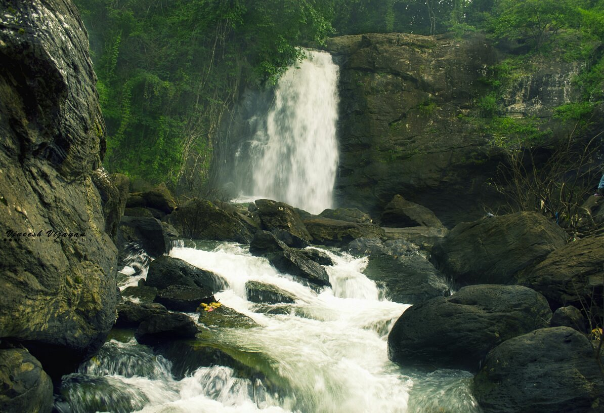

The natural scenic beauty of Wayanad and its rich natural resources offer several opportunities for adventure tourism. The hills rocks and valley which make the very unique character of Wayanad provide a lot for catering to the ever increasing demand for adventure tourist.Trekking to the Chembra peak is one of the risky tourist endeavours. Chembra peak is the highest peak in Wayanad at 2100 meters above mean sea level.
 Chembra Peak
Chembra Peak
 Edakkal Caves
Edakkal Caves

Soochippara Falls
 Meenmutty Falls
Meenmutty Falls